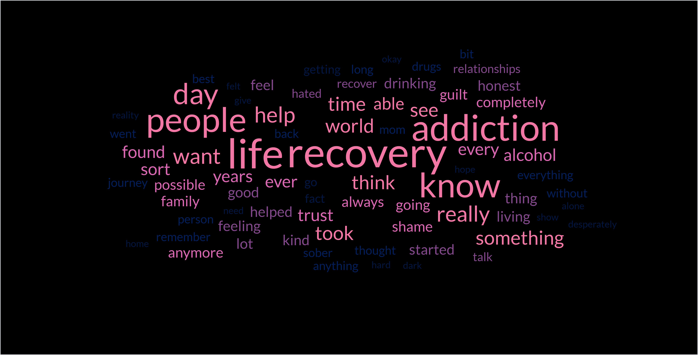

Home
This is a portfolio website that showcase projects I have worked on and examples of managing data by Excel.
About
This section introduce myself and the reasons I want to work for Substance Misuse Team.
Most mentioned words from the stories of Taking Action Addiction Campaign by The Forward Trust
Projects
Data Organization and Navigation:
Focus on structured data formatting using tables, apply conditional formatting, sort data by multiple columns, and use advanced filtering techniques like custom filters.
Formulas and Functions:
Learn intermediate functions such as lookup functions (VLOOKUP, HLOOKUP, XLOOKUP, INDEX, and MATCH), logical functions (IF, AND, OR, and nested IF), text functions (CONCAT, TEXT, TRIM, LEFT, RIGHT, MID, and LEN), and date/time functions (DATE, DATEDIF, NOW, and EDATE). Also, use error-handling techniques like IFERROR or ISERROR.
Data Analysis:
Develop skills with PivotTables to summarize data, customize PivotTables, and use calculated fields. Create dynamic charts like combo charts or sparklines, and apply tools like Goal Seek, Data Tables, and Scenario Manager for what-if analysis.
Data Cleaning:
Remove duplicates, set data validation rules, and split columns using Text to Columns. These steps will help ensure the data is clean and usable.
Advanced Formatting:
Use custom number formatting for specific needs like dates or special numbers, and apply formulas in conditional formatting to highlight rows or patterns.
Automation and Efficiency:
Speed up repetitive tasks by using keyboard shortcuts and recording basic macros (requires enabling the Developer tab).
Collaboration and Security: Protect data by setting passwords for worksheets and workbooks, track changes, and use co-authoring tools in Excel Online or shared workbooks.
Jockey Club "COVID-19 Aftereffects" Rehabilitation Plan
Active objects:
COVID-19 recovered persons
Activity introduction:
The Hong Kong Jockey Club Charities Trust will launch the one-year "Jockey Club COVID-19 Community Support Service" in September 2022 to support the rehabilitation needs of COVID-19 patients in the community. United Christian Nethersole Community Health Service provides inter-professional services in the plan, including family medicine (Western medicine) , Chinese medicine , physiotherapy , nutritional counseling , emotional counseling , etc. Registered dietitians work with participants to set recovery goals and provide dietary advice during individual dietary counseling. In addition, a Whatsapp group has been set up to provide online support to recovering patients.
Donor organization:
Hong Kong Jockey Club Charities Trust
攜手齊心—中醫藥新冠復康診療計劃
項目名稱
攜手齊心—中醫藥新冠復康診療計劃
獲資助機構
香港中醫中藥界聯合總會
計劃由中醫藥發展基金全額資助、香港中醫中藥界聯合總會統籌、醫務衞生局全力支持。為支援中醫藥界共同應對 2019 冠狀病毒病及善用中醫藥的優勢，協調中醫藥界集中在私人市場的資源，為康復者提供中醫復康診療服務，以發揮中醫藥在復康診療的優勢和作用，讓受新冠後遺症影響的市民能得到中醫藥的支援。
計劃已於2023年8月底結束，並服務約8千名確診患者。參與計劃的中醫師普遍認為計劃讓廣大香港市民加深了解中醫治療新冠後遺症的功效 ，並提供機會讓一些從未接受過中醫診療的市民透過計劃接觸並從而信賴中醫 ，大大提升了社會各界對中醫治療新冠後遺症療效的肯定及認受性 ，長遠有助中醫藥普及和發展。
Contact
Phone number:
Email: